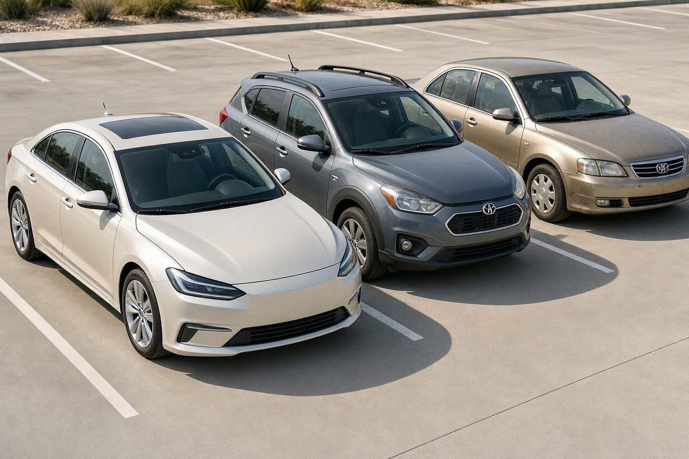

با ۱.۵ میلیارد چه ماشینی بخریم؟ راهنمای صفر و کارکرده در شهریور ۱۴۰۵
بودجهای حدود یک و نیم میلیارد تومان دارید و بین دهها گزینه صفر و کارکرده گیر کردهاید. این راهنما کمک میکند بهجای دنبالکردن قیمت لحظهای، درست انتخاب کنید.
با بودجهای حدود ۱.۵ میلیارد تومان در شهریور ۱۴۰۵ عملاً سه مسیر دارید: یک خودروی صفر داخلی از رده متوسط، یک خودروی مونتاژی یا کراساوور اقتصادی کارکرده، یا یک سدان داخلی چند سال کارکرده با آپشن بالاتر. انتخاب درست به سبک استفاده، هزینه نگهداری و مهمتر از همه سلامت فنی خودرو بستگی دارد، نه فقط به عدد قیمت. قیمتها روزانه تغییر میکنند، پس پیش از معامله حتماً نرخ همان روز را استعلام کنید.
- قیمت خودرو در بازار ایران روزانه نوسان دارد؛ این مقاله چارچوب تصمیم میدهد، نه لیست قیمت ثابت. برای عدد دقیق، نرخ روز را ببینید.
- در این بودجه معمولاً بین صفر داخلی رده متوسط، کارکرده مونتاژی و سدان داخلی چندساله انتخاب میکنید.
- صفر یعنی خیال راحتتر از نظر فنی اما افت قیمت اولیه بیشتر؛ کارکرده یعنی امکانات بیشتر با همان پول اما ریسک فنی بالاتر.
- یک خودروی کارکرده سالم تقریباً همیشه از یک صفرِ رده پایینتر ارزش استفاده بهتری دارد، بهشرط تأیید سلامت آن.
- بزرگترین اشتباه در این بودجه، خرید بر اساس ظاهر و قیمت جذاب بدون کارشناسی فنی و بدنه است.
اول قیمت را رها کنید، بعد تصمیم بگیرید
بیشتر خریدارها خرید را از قیمت شروع میکنند و همین کار انتخاب را سخت میکند. قیمت خودرو در بازار ایران روزهفته به روزهفته و حتی روزانه جابهجا میشود، پس تکیه بر یک عدد ثابت شما را گمراه میکند. خیلی از خریدارها این بخش را نادیده میگیرند و مستقیم سراغ آگهی میروند. مجموعه کارماچک بارها دیده که خریدار روی چند میلیون اختلاف قیمت چانه زده، اما از کنار ایراد فنی چند ده میلیونی ساده رد شده است.
راه بهتر این است که اول به این سه سؤال جواب دهید: خودرو را بیشتر برای چه کاری میخواهید (شهری، جاده، کار)؟ در سال چند کیلومتر میرانید؟ و تحمل هزینه نگهداری و تعمیر شما چقدر است؟ جواب همین سه سؤال، فهرست گزینهها را قبل از دیدن هر قیمتی نصف میکند.
نکته مهم اینجاست که بودجه ۱.۵ میلیارد یک مرز خشک نیست. کمی بالاتر یا پایینتر از آن، دستهای کاملاً متفاوت از خودروها باز میشود. پس بهجای قفلشدن روی یک مدل خاص، روی «دستهای که به کار شما میآید» تمرکز کنید.
سه دسته خودرو که در این بودجه پیش رو دارید
برای اینکه تصمیم سادهتر شود، گزینههای این بودجه را در سه دسته کلی میبینیم. هر دسته منطق خودش را دارد و برای یک نوع خریدار ساخته شده است.

۱. خودرو صفر داخلی رده متوسط
در این دسته معمولاً سدانها و کراساوورهای اقتصادی تولید داخل قرار میگیرند. مزیت اصلی، نو بودن و نبود سابقه تصادف یا کارکرد پنهان است. در مقابل، افت قیمت سال اول در خودرو صفر معمولاً بیشتر از خودروی کارکرده است و باید برای دریافت خودرو، شرایط فروش و زمان تحویل شرکتها را هم در نظر بگیرید.
۲. کراساوور یا مونتاژی کارکرده اقتصادی
با همین بودجه میتوانید بهجای صفرِ رده پایین، سراغ یک مونتاژی یا کراساوور چینی یا کرهای چند سال کارکرده بروید که آپشن و ابعاد بیشتری دارد. اینجا شما امکانات و حس بهتری از خودرو میگیرید، اما ریسک فنی و هزینه قطعات وارداتی بالا میرود و باید سابقه سرویس و سلامت گیربکس را جدی بگیرید.
۳. سدان داخلی چند سال کارکرده با آپشن بالاتر
گزینه سوم، مدلهای داخلی شناختهشده با چند سال کارکرد است که قطعات فراوان و ارزان دارند و تعمیرشان در همه شهرها ممکن است. این دسته برای کسی مناسب است که هزینه نگهداری پایین و فروش راحت در آینده برایش مهمتر از داشتن آخرین امکانات است.
چند نمونه از خودروهای ایرانی محبوب در این بودجه
برای اینکه دستهها ملموستر شوند، چند مدل پرتکرار بازار ایران را نام میبریم. توجه کنید که قیمت هر مدل بسته به سال ساخت، تیپ، آپشن و کارکرد فرق میکند، پس اینها فقط نمونهاند تا بدانید در هر دسته دنبال چه بگردید.
کدامیک از اینها دقیقاً در بودجه شما جا میشود، به قیمت روز و سال ساخت بستگی دارد. برای اینکه بدون حدس تصمیم بگیرید، بهتر است ارزش روز هر مدل را ببینید و مقایسه کنید.
صفر بخریم یا کارکرده؟
این پرسش تقریباً همه خریدارها را درگیر میکند. جواب کوتاه: بستگی به این دارد که ریسک را بیشتر میترسانید یا افت قیمت را. خودرو صفر ریسک فنی کمتری دارد چون سابقهای پشت آن نیست، اما بخشی از پول شما در همان ماههای اول بهشکل افت قیمت از دست میرود.
خودروی کارکرده در این بودجه معمولاً ارزش استفاده بیشتری میدهد، چون افت قیمت سنگین اولیهاش را مالک قبلی پرداخته است. شرطش این است که واقعاً سالم باشد. یک خودروی کارکرده با بدنه سالم، کارکرد واقعی و سرویس منظم، انتخاب هوشمندانهتری از یک صفرِ رده پایینتر است. اما همین خودرو اگر تصادفی یا دستکاریشده باشد، میتواند از روز اول ضرر خالص باشد.
برای اینکه بین این دو درست انتخاب کنید، پیش از تصمیم، یک بار بررسی کامل خودرو قبل از خرید را مرور کنید تا بدانید در خودروی کارکرده دقیقاً چه چیزهایی باید چک شود.
پیش از معامله، خودرو را بررسی کنید
در بودجه ۱.۵ میلیارد، یک ایراد پنهان میتواند چند ده میلیون از ارزش معامله کم کند. بررسی تخصصی پیش از خرید، ابهام فنی و بدنه را روشن میکند.
شروع کارشناسی خودروداخلی، مونتاژی یا وارداتی کارکرده؟
در این بودجه هر سه مسیر روی میز است و هرکدام برای یک اولویت متفاوت ساخته شدهاند. انتخاب اشتباه اینجا معمولاً بعداً خودش را در هزینه نگهداری نشان میدهد.
خودروی داخلی شناختهشده
مزیت بزرگ خودروهای داخلی رایج، فراوانی قطعه، ارزانی تعمیر و فروش سریع در آینده است. اگر خودرو ابزار کار روزمره شماست و نمیخواهید درگیر کمبود قطعه شوید، این گروه امنترین انتخاب است. در مقابل، از نظر امکانات و کیفیت داخل کابین معمولاً از رقبای مونتاژی عقبتر است.
خودروی مونتاژی چینی یا کرهای
این گروه با همان پول، فضای بیشتر، امکانات رفاهی بالاتر و ظاهر جذابتری میدهد. نکتهای که باید حواستان باشد، تفاوت زیاد بین برندها در تأمین قطعه و افت قیمت است. بعضی مدلها ارزش خود را خوب نگه میدارند و بعضی دیگر بهسرعت افت میکنند، پس پیش از خرید، روند قیمت همان مدل را در بازه چند ماه گذشته ببینید.
وارداتی کارکرده
گاهی با این بودجه میتوان یک وارداتی چند سال کارکرده هم پیدا کرد. اینجا وسوسه امکانات و کلاس بالاتر زیاد است، اما هزینه قطعه، بیمه و تعمیر تخصصی میتواند چند برابر خودروی داخلی باشد. این گزینه فقط وقتی منطقی است که هم سلامت خودرو تأیید شده باشد و هم توان پرداخت هزینه نگهداری بالاتر را داشته باشید.
چون قیمت و عرضه این خودروها بهسرعت تغییر میکند، پیش از هر تصمیمی ارزش روز مدل موردنظر و افت قیمت آن را با یک مرجع معتبر بسنجید. ابزار قیمتگذاری خودرو کمک میکند تصویر واقعبینانهتری از ارزش معامله داشته باشید.
جدول مقایسه سریع سه گزینه
این جدول برای تصمیم سریع است، نه لیست قیمت. هدف این است که ببینید کدام دسته با اولویت شما جور درمیآید.
| معیار | صفر داخلی رده متوسط | مونتاژی کارکرده | سدان داخلی چندساله |
|---|---|---|---|
| ریسک فنی اولیه | کم | متوسط تا زیاد | متوسط |
| امکانات و رفاه | متوسط | زیاد | کم تا متوسط |
| هزینه نگهداری | کم تا متوسط | زیاد | کم |
| افت قیمت پیش رو | زیاد در سال اول | متغیر بسته به برند | کم |
| مناسب برای | خیال راحت فنی | امکانات با همان بودجه | کمهزینه و فروش راحت |
همانطور که میبینید هیچ گزینهای در همه ستونها برنده نیست. انتخاب درست یعنی پذیرفتن یک ضعف در برابر مزیتی که برای شما مهمتر است.
اشتباهات رایج خرید در این بودجه
وقتی پول قابلتوجهی وسط است، اشتباههای تصمیمگیری گران تمام میشوند. این موارد را زیاد میبینیم.
- خرید بر اساس قیمت جذاب یک آگهی، بدون بررسی دلیل ارزان بودن آن.
- مقایسه صفر و کارکرده فقط با عدد قیمت، بدون در نظر گرفتن افت قیمت و هزینه نگهداری.
- رفتن سراغ خودروی وارداتی یا مونتاژی خاص بدون بررسی تأمین قطعه.
- اعتماد به ظاهر تمیز و صافی بدنه بهجای بررسی رنگ و شاسی.
- باور کردن کارکرد پایین اعلامشده بدون تطبیق با فرسودگی واقعی خودرو.
- عجله در معامله بهخاطر ترس از گرانشدن، پیش از کارشناسی فنی.
اگر گزینه شما خودروی کارکرده است، پیش از پرداخت بیعانه، یک بار چک لیست خرید خودرو دست دوم را مرور کنید تا نقطهای از بررسی جا نماند.
روش انتخاب گامبهگام
برای اینکه از میان این همه گزینه به یک تصمیم روشن برسید، این ترتیب کمک میکند.
- کاربری را مشخص کنید: شهری، جاده یا کاری. همین یک قدم، دسته خودرو را محدود میکند.
- سقف واقعی هزینه را ببندید: قیمت خودرو بهعلاوه هزینههای جانبی و تعمیر اولیه احتمالی.
- بین صفر و کارکرده تصمیم بگیرید: بر اساس مدت نگهداری و تحمل ریسک فنی.
- دو سه مدل نهایی را انتخاب کنید: نه یک مدل، تا در معامله دستتان باز بماند.
- قیمت و افت قیمت روز را استعلام کنید: تا با نرخ واقعی چانه بزنید، نه حدس.
- پیش از پرداخت، کارشناسی کنید: بدنه، رنگ، شاسی، کارکرد و وضعیت فنی را تأیید کنید.
کارماچک خدمات کارشناسی خودرو را برای بررسی فنی، رنگ، بدنه و عوامل مؤثر بر ارزش معامله ارائه میدهد. فقط ایراد خودرو را شناسایی نمیکنیم؛ اثر آن روی هزینه تعمیر و ارزش واقعی معامله را هم مشخص میکنیم.
جمعبندی
پرسش «با ۱.۵ میلیارد چه ماشینی بخریم» یک جواب واحد ندارد، چون بهترین انتخاب برای هرکس فرق میکند. اگر خیال راحت فنی میخواهید، صفر داخلی رده متوسط منطقی است. اگر امکانات بیشتر با همان پول برایتان مهم است، مونتاژی کارکرده سالم گزینه خوبی است. و اگر کمهزینهترین و کمدردسرترین مسیر را میخواهید، سدان داخلی چندساله جواب میدهد.
در هر سه مسیر، یک اصل ثابت است: تصمیم را روی قیمت لحظهای نبندید و پیش از پرداخت، سلامت واقعی خودرو را تأیید کنید. همین یک قدم، تفاوت بین یک خرید خوب و یک پشیمانی چند ده میلیونی است.
با اطمینان بیشتری معامله کنید
پیش از نهاییکردن خرید در این بودجه، وضعیت فنی و بدنه خودرو را با کارشناسی تخصصی روشن کنید تا با دید باز تصمیم بگیرید.
ثبت درخواست کارشناسیسؤالات متداول
با ۱.۵ میلیارد بهتر است صفر بخریم یا کارکرده؟
بستگی به هدف شما دارد. اگر خودرو را چند سال نگه میدارید و میفروشید، کارکرده سالم معمولاً ارزش استفاده بیشتری دارد چون افت قیمت اولیه را نپرداختهاید. اگر خیال راحت فنی و نگهداری بلندمدت اولویت شماست، خودرو صفر ارزش پرداخت افت قیمت سال اول را دارد. در هر دو حالت، تأیید سلامت خودرو تعیینکننده است.
چرا این مقاله قیمت دقیق مدلها را نمیگوید؟
قیمت خودرو در بازار ایران روزانه تغییر میکند و هر عدد ثابتی خیلی زود قدیمی میشود. به همین دلیل این راهنما روی چارچوب تصمیم تمرکز دارد، نه لیست قیمت. برای عدد دقیق و بهروز، بهتر است نرخ همان روز مدل موردنظر را از یک مرجع معتبر قیمتگذاری استعلام کنید.
خودروی مونتاژی کارکرده در این بودجه ریسک دارد؟
ریسک اصلی مونتاژی کارکرده، تأمین قطعه و افت قیمت متغیر بین برندهاست، نه لزوماً کیفیت خودرو. پیش از خرید، در دسترس بودن و قیمت قطعات، سابقه سرویس و سلامت گیربکس را جدی بررسی کنید. اگر این موارد تأیید شوند، این گروه میتواند امکانات بیشتری با همان بودجه بدهد.
مهمترین بررسی پیش از خرید در این بودجه چیست؟
سلامت بدنه، رنگ و شاسی، سپس کارکرد واقعی و وضعیت فنی. در این محدوده قیمتی، یک ایراد پنهان میتواند چند ده میلیون از ارزش معامله کم کند. کارشناسی فنی و بدنه پیش از پرداخت، هم ریسک را کم میکند و هم ابزار چانهزنی منطقی به شما میدهد.
آیا خرید خودروی وارداتی کارکرده با این بودجه عاقلانه است؟
گاهی ممکن است، اما فقط وقتی هم سلامت خودرو تأیید شده باشد و هم توان پرداخت هزینه نگهداری بالاتر را داشته باشید. قطعه، بیمه و تعمیر تخصصی خودروی وارداتی معمولاً چند برابر خودروی داخلی است. اگر بودجه شما دقیقاً سر قیمت خرید بسته میشود، این گزینه میتواند بعداً پرهزینه شود.
چطور مطمئن شوم کارکرد اعلامشده واقعی است؟
کارکرد اعلامشده را با فرسودگی واقعی خودرو تطبیق دهید: وضعیت پدالها، فرمان، صندلی، لاستیک و برچسبهای سرویس. اگر خودرو کارکرد پایین دارد اما فرسودگی هماهنگ نیست، جای شک است. برای اطمینان بیشتر، بررسی تخصصی کارکرد و وضعیت فنی پیش از معامله کمک میکند.